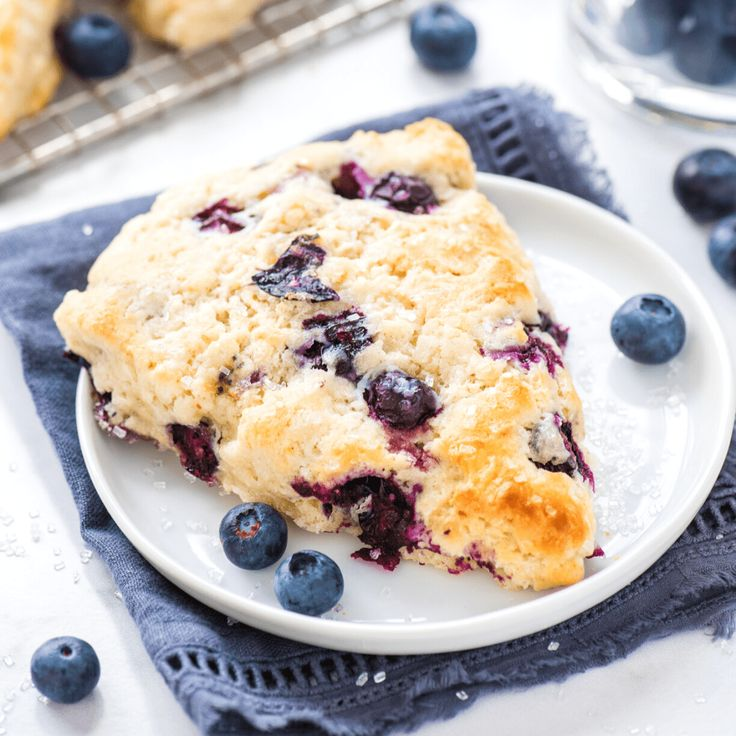

BLUEBERRY SCONES

INGREDIENTS
2 cups all-purpose flour, spooned and leveled
¼ cup cane sugar
2 teaspoons baking powder
½ teaspoon sea salt
½ cup unsalted butter, 1 stick, frozen
1½ cups blueberries
½ cup cold buttermilk, plus more for brushing
1 large egg
1 teaspoon vanilla extract
Coarse sugar, for sprinkling, optional
INSTRUCTIONS
-
Line a large baking sheet with parchment paper.
-
In a large bowl, whisk together the flour, sugar, baking powder, and salt.
-
On the large holes of a box grater, grate the frozen butter. Add to the flour mixture and toss to coat. Use your hands to work the butter into the flour until the mixture resembles a coarse meal. Add the blueberries and toss to incorporate.
-
In a medium bowl, whisk together the buttermilk, egg, and vanilla, if using. Pour over the flour mixture and use a spatula to mix until a shaggy dough forms. Knead with your hands to incorporate any remaining dry flour. The dough should feel soft but not sticky. If it’s sticky, work in a bit more flour. If it’s dry, drizzle in a little more buttermilk. Form the dough into a ball.
-
Transfer the dough ball to a lightly floured surface and form it into a 7- to 8-inch disk about 1 inch thick. Slice into 8 equal wedges and transfer to the prepared baking sheet.
-
Freeze the scones for 15 minutes. Meanwhile, preheat the oven to 400°F.
-
Remove the scones from the freezer and brush with buttermilk. Sprinkle with coarse sugar, if using. Bake for 18 to 27 minutes, or until golden brown on top.
-
Transfer to a wire rack to cool.